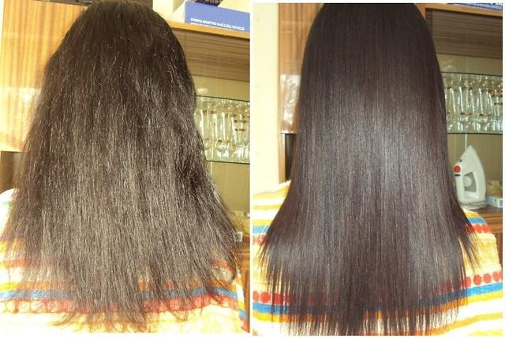
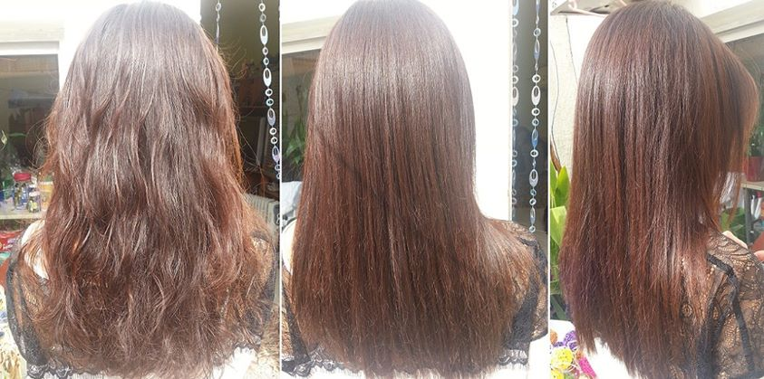
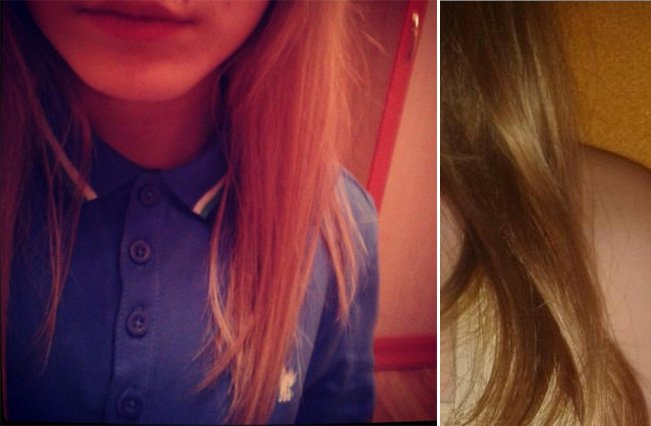
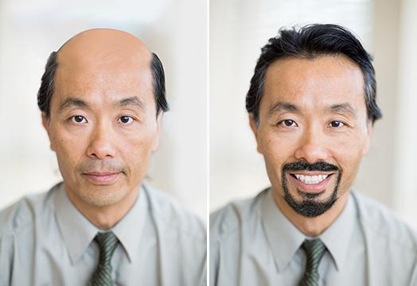

bảo
234+256
@baon
Bảo Nguyễn
bảo
234+256
bảo
15+14


bảo
Bảo Nguyễn
95%
Được ủng hộ bởi 195 người
blog cá nhân
Xin chào, độc giả quý mến!
Tôi muốn chia sẻ với các bạn cách tôi đã giải quyết vấn đề rụng tóc. Nó thực sự là vấn đề nghiêm trọng - ít nhất là với tôi. Tôi chưa bao giờ nghĩ rằng phải đối mặt với nó, nhất là khi đã 29 tuổi. Nó thực sự là một THẢM HỌA! Tóc rụng không chỉ trong một ngày, không, nó là cả quá trình - tôi có thể nhận thấy mái tóc tôi ngày càng mỏng đi. mỗi ngày: khi chải đầu, gội đầu, ngay cả khi ngủ. Thường là tôi vẫn chải ở những vùng ít tóc, nhưng một ngày tôi nhận thấy một vùng BỊ TRỌC ngay giữa đầu.
Hãy nhìn xem, đây là tóc tôi khoảng 2 tháng trước (hoặc hơn nữa):
Đàn ông ít nhất còn có thể cắt tóc ngắn, thậm chí còn thích hơn vì độ nam tính, nhưng mái tóc ngắn không phù hợp với phụ nữ, chúng tôi không thể trở nên nữ tính, đó là chắc chắn. Tôi có thể hơi phóng đại một chút, nhưng mái tóc đẹp, dài và dày là những gì làm nên người phụ nữ. Đánh mất điều này cũng như đánh mất bản thân. Bạn có hiểu ý tôi nói không? Tôi thậm chí phải xin nghỉ vài ngày vì tôi đã quá xấu hổ để đối diện với đồng nghiệp. Tôi đã 29 tuổi. Nhưng tôi vẫn cảm thấy như một cô gái trẻ. Và chồng của tôi... Anh ấy nói rằng mọi thứ đều ổn và anh ấy vẫn yêu tôi cho dù tôi trông như thế nào, nhưng tôi có thể cảm thấy anh ấy ngày càng xa cách. Đó là khoảng thời gian địa ngục với tôi. Tôi không hề tự tin vào bản thân, và kết quả là tôi cảm thấy rằng mọi thứ đã sụp đổ.
Tôi dùng mọi thứ có thể. Tôi không có thời gian để tìm hiểu, chỉ thử nghiệm vì vấn đề này cần được giải quyết càng nhanh càng tốt. Bạn không thể tưởng tưởng được tôi đã thử bao nhiêu cách đâu. Đây là danh sách:
- dầu gội (*mua với số lượng không đếm được, nhiều hãng và giá cả, tôi dùng nó theo chỉ điịnh, nhưng đều không có tác dụng, ngay cả trong thời gian ngắn) Chúng chưa bao giờ có hiệu quả!
- mặt nạ và kem dưỡng (tôi cũng mua với số lượng lớn, dùng kèm hoặc không kèm với nhiều liệu pháp điều trị khác, mái tóc của tôi mềm hơn nhưng vẫn bị rụng tóc) - Chúng chưa bao giờ có hiệu quả!
- thuốc (khi tham khảo ý kiến chuyên gia, anh ấy kê tôi một đơn thuốc, nói rằng gan tôi có độc tố, dẫn tới rụng tóc). Tôi dùng một liệu trình, trải qua một số thử nghiệm. Kết quả là: theo bệnh án của tôi, mọi thứ đều ổn, nhưng tôi vẫn tiếp tục rụng tóc. Chúng chưa bao giờ có hiệu quả!
- ăn kiêng (không có gì để nói, thật sự, "thức ăn phù hợp" sẽ không làm tóc bạn dài ra, tin tôi đi) - Chúng chưa bao giờ có hiệu quả!
- các phương thuốc dân gian (tôi chà nước luộc tỏi lên da đầu, cùng lúc dùng dầu cây ngưu bàng và mayonnaise - nhưng nó còn tệ hơn, tóc tôi ngày càng mỏng) Chúng chưa bao giờ có hiệu quả!
Như bạn có thể thấy, tôi không hề khoanh tay đứng nhìn. Nhưng thật sự tuyệt vọng, vì không thứ gì có hiệu quả. Thậm chí chỉ là một chút ít. Không chút tác dụng nào. Tôi chỉ mong rằng ít nhất một phương pháp điều trị tóc rụng có hiệu quả.
Tôi đã gọi cho bạn của mình, cô ấy cười tôi và nói rằng tôi thật ngu ngốc, không có loại mặt nạ dù rẻ tiền hay đắt đỏ cũng có thể hiệu quả được. Chúng chỉ có tác làm cho tóc phủ lớp silicon - trông có vẻ óng ả và mượt, trong một khoảng thời gian ngắn.
Làm ở tiệm tóc cũng vậy, không thể trông đợi tóc phục hồi như họ cam kết, bạn chỉ có thể có hiệu quả bằng mắt tạm thời tầm 3 ngày là cùng.
Bạn tôi khuyên tôi dùng thử một thứ - một loại xịt tóc có tên là Princess hair. Mọi người trong tiệm tóc của cô ấy làm việc dùng nó được một thời gian, cơ bản là nó là cách làm cho tóc dài và phục hồi tóc.
Tóm lại là, bạn tôi nói rằng mọi sản phẩm chăm sóc tóc có hiệu quả được bán đều chứa thành phần có trong loại xịt này. Chúng đảm bảo hiệu quả. Nhưng tốn kém.
Thợ làm đầu biết về nó đã lâu vì chúng cực đắt vì mọi quá trình phục hồi sinh học và duỗi tóc đều dựa trên sản phẩm này. Họ chỉ tạo thêm vài cái tên hào nhoáng để lấy thêm tiền từ khách hàng.
Thật sự đó. Vài chỗ, nhất là vùng trung tâm và trên trán, trông hói lộ rõ do tóc cứ rụng từ đó. Và sau đó - mọi điểm hói đều bắt đầu biến mất.
Tôi thật sự sắp khóc! Thật khó tin, nhưng nó là sự thật. Tôi không biết nó có phép màu gì không, nhưng THẬT SỰ HIỆU QUẢ!
Không tin ư? Hãy tự nhìn đi (ảnh chụp cách nhau 2 tháng).
Sự khác biệt rõ ràng! Cuối cùng tôi đã không còn phải che tóc của mình nữa.
Tôi dùng nó như thế nào? Tuân theo hướng dẫn sử dụng - tôi xịt nó lên tóc và da dầu, xoa nhẹ, che kín với giấy bóng và khăn, và rửa sạch nó. Rất dễ sử dụng, và HIỆU QUẢ ĐẶC BIỆT CAO!
Tôi đã đặt mua ở đâu? Trên trang này. Theo tôi biết, họ chỉ cung cấp sản phẩm chính hãng, có thể kiểm tra mã vạch trên bao bì.
Đây là toàn bộ câu chuyện của tôi. Hạnh phúc bất tận, nên tôi quyết định chia sẻ với các bạn. Tôi chắc chắn rằng nó sẽ có ích.
Thêm nữa, nó cũng có tác dụng với mẹ tôi. Đây là kết quả của mẹ tôi:
P.S. Chia sẻ câu chuyện của bạn trong bình luận
Bình luận
Tôi cũng đã biết về sản phẩm này. Tôi bị hói đầu từ rất sớm, sản phẩm này thực sự giúp tôi, kết quả là gần như ban đầu. Rất hiệu quả!

Nếu không còn gì có thể giúp, thì có, bạn nên dùng nó. Tôi thậm chí còn cấy tóc một lần. Tốn quá nhiều tiền cho nó. Một mặt, tôi không hối hận, nhưng mặt khác - thật sự đáng tiếc. Tôi thực sự có thể tiết kiệm cả đống tiền nếu biết về nó sớm hơn(( Tại sao?!
Tôi không biết phải nói gì. Thật sự hấp dẫn, tôi sẽ đặt mua. Chưa thực sự bị hói, nhưng rụng tóc rất nhiều!
Ai cũng đã sử dụng BÌNH XỊT này? Làm ơn chia sẻ, tôi thật sự hứng thú. Tôi nghe nói rằng nó phù hợp cho cả đàn ông và phụ nữ, một sản phẩm khoa học phát triển. Tôi đã đọc trên vài diễn đàn rằng các cầu thủ bóng đá nổi tiếng thoát khỏi hói đầu nhờ sản phẩm này.
Các bạn còn biết thêm gì nữa?
Tôi đồng ý, đây thực sự là sản phẩm hữu dụng để chữa tóc thưa! Tôi biết về Princess hair từ bài viết này. Nhưng tóc của tôi thật sự bị hỏng do uốn quăn, tôi đi uốn cho dù mọi người cảnh báo rằng nó hại cho tóc. Mái tóc của tôi sau khi uốn thật sự thảm họa, cho dù tôi đã làm với thợ làm đầu chuyên nghiệp. Tôi đã dùng loại xịt tóc này được một tháng, tóc của tôi thật sự bóng bẩy! Và nó đã dài thêm 5 cm! Thật sự hài lòng
Tôi đã đặt mua cho con gái tôi, thực sự lo lắng. Tôi không thấy vấn đề gì với mái tóc của nó, nhưng con bé rất tuyệt vọng.
Ồ, loại xịt này cũng đã giúp tôi! Hiệu quả rất nhanh! Và bạn không phải chờ cả nửa năm để thấy sự khác biệt.
Trang Trần, nếu bạn vẫn còn nghi ngờ, hãy nhìn kết quả của tôi. Thắc mắc?)

Tôi cũng đã gặp phải vấn đề tương tự, tôi đã đối mặt với nó 7 năm, nhưng vẫn không có kết quả. Chỉ có loại xít này mới giúp được tôi. Tôi không biết phải làm gì nếu thiếu nó. Tôi đã mua cho cả mẹ tôi nữa, bà ấy rất vui. MÓN QUÀ TUYỆT VỜI!